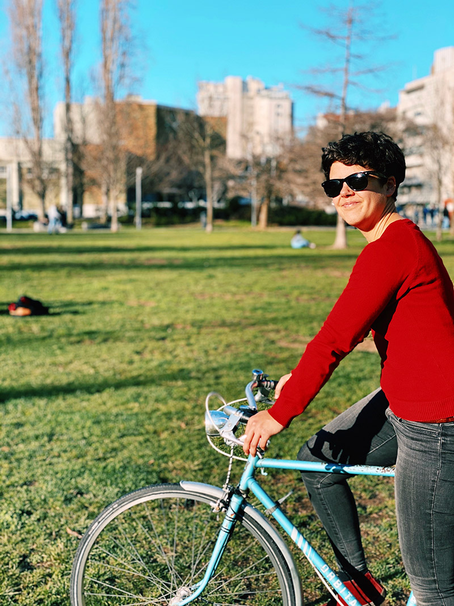

About the instructors
Rosa Félix
Senior Posdoctoral Researcher
CERIS, Instituto Superior Técnico - University of Lisbon
Website | Google Scholar | Twitter | GitHub | Linkedin
Short bio
Rosa Félix is a senior post-doctoral researcher at the Instituto Superior Técnico – University of Lisbon and member of the U-Shift lab, in the Transportation Research Group of CERIS. Having a background of Urban Planning Engineering, she completed her Ph.D. in Transport Systems in 2019 at Instituto Superior Técnico (MIT Portugal program), and was a Visiting Scholar at Portland State University in 2017/18.
Rosa is an active mobility researcher, and excels in R and GIS. She is an open source and reproducible research enthusiast. Her publications include articles on cycling and behavior change, and open source code solutions to specific GIS and mobility problems. Every year, Rosa lectures a course for cycling infrastructure planning and design for practitioners, and also teaches GIS for transportation and introduction to programming for MSc course of Transportation Systems.
Rosa has worked in multiple R&D and consultancy projects with both municipalities and industry, such as the Municipality of Lisbon (2019-2022) and the Department for Transportation of Lisbon Metro (2023), in which she developed a digital tool1 to support the planning of the metropolitan cycling network, in collaboration with Institute for Transport Studies of the University of Leeds.

Gabriel Valença
Posdoctoral Researcher
CERIS, Instituto Superior Técnico - University of Lisbon
Google Scholar | Linkedin
Short bio
Gabriel Valença is a post-doctoral researcher at the Instituto Superior Técnico - University of Lisbon and member of the U-Shift lab in Transportation Research Group of CERIS, where he recently completed his Ph.D. in Transportation Systems.
He has experience in R programming with applications related to transport demand modelling, data science, GIS and machine learning. He is a member of the European Doctoral Training Network from the 1st intake. He did his international placement at the Technical University of Denmark for 6 months.
His background is in Civil Engineering, where he graduated at the Federal University of Rio Grande do Norte (UFRN) in Brazil, while studying part of his degree at the University of Toronto, in Canada. His main research areas are in integrating concepts related to street design, smart cities, urban mobility and intelligent transportation systems focusing on traveler behavior, transport demand modelling and artificial intelligence.
Rafael H. M. Pereira
Head of Data Science
Institute for Applied Economic Research (Ipea), Brazil
Website | Google Scholar | Twitter | Linkedin
Short bio
Rafael H. M. Pereira is a senior researcher in the fields of urban analytics, spatial data science and transport studies at the Institute for Applied Economic Research (Ipea), Brazil. His research looks broadly at how urban policies and technologies shape the spatial organization of cities, human mobility as well as their impacts on social and health inequalities.
Some of his key contributions to the fields of urban analytics and planning involve the development of new methods and open-source computational tools to the study of urban systems and transportation networks. These contributions emerge from substantive interests around social justice and sustainability issues in urban development, with particular focus on transportation equity and inequalities in access to opportunities, and the environmental impacts of built environments and mobility patterns.
With a background in Sociology and Demography, Dr. Pereira obtained his PhD in Geography from the Transport Studies Unit at Oxford University.
Biclar. Available at: https://biclar.tmlmobilidade.pt↩︎